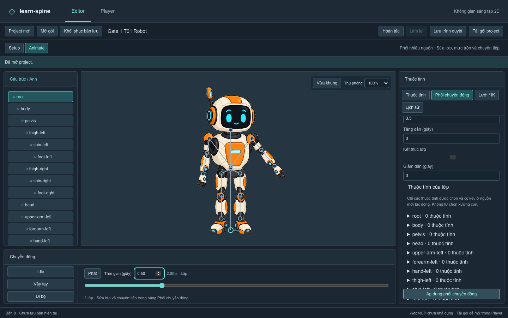
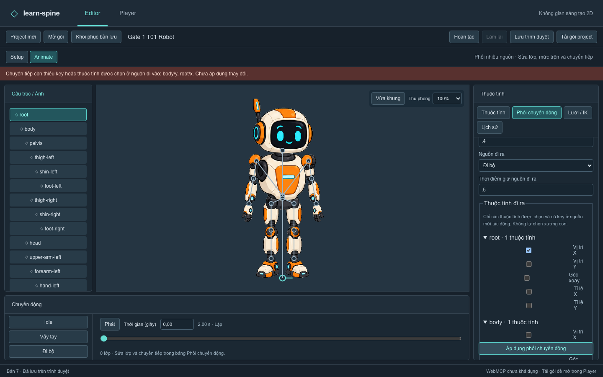
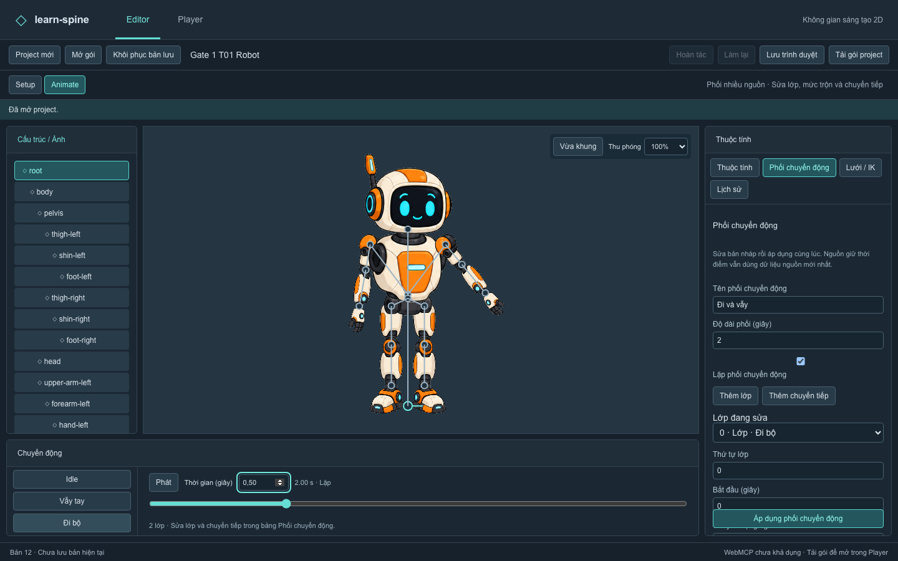
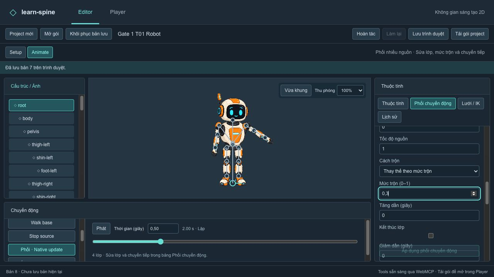
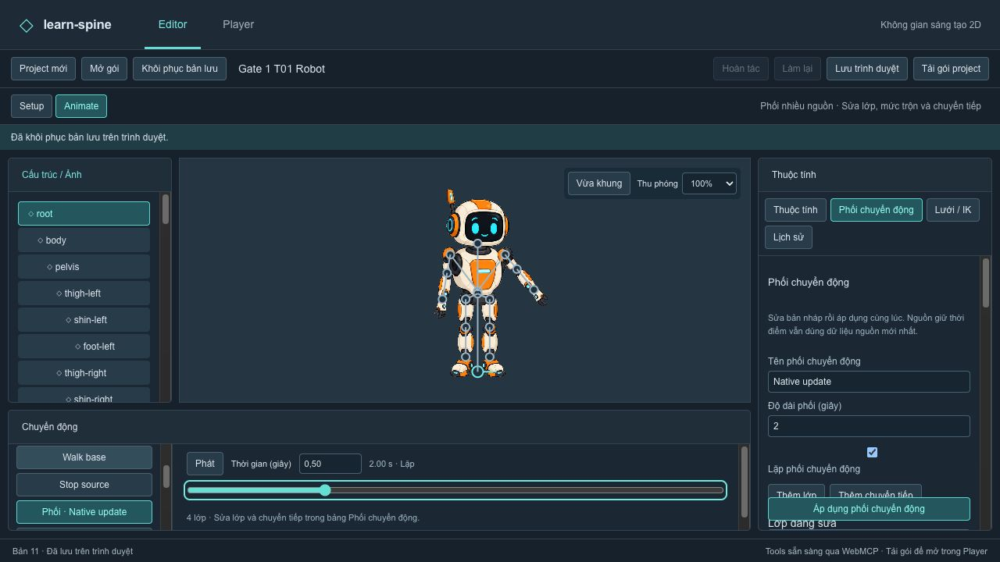
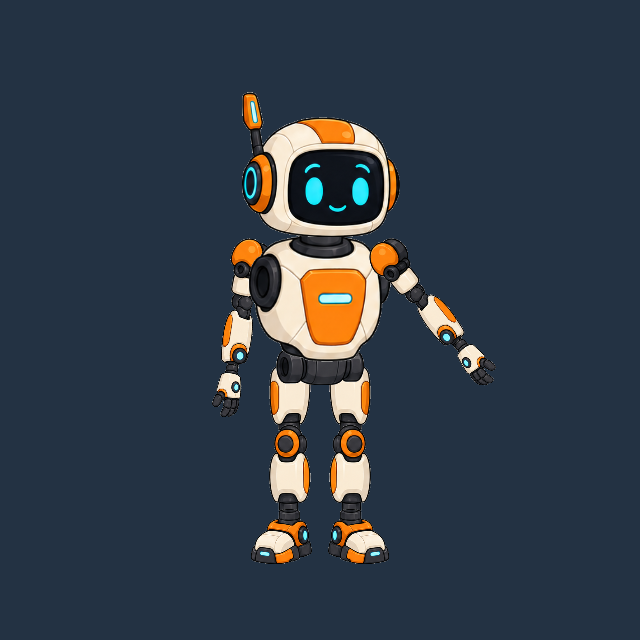

Hiện vật kiểm tra giao diện thực. Video là ghi lại thao tác thử nghiệm, không phải tính năng xuất video. Cách tái lập và giới hạn

Gói composition đã tạo bằng UI · Dữ liệu và pose đọc lại
Các mốc chuyển tiếp và kết quả
11 native calls và các bước UI · Bản 11 mở lại giữ nguyên geometry bản 7.


